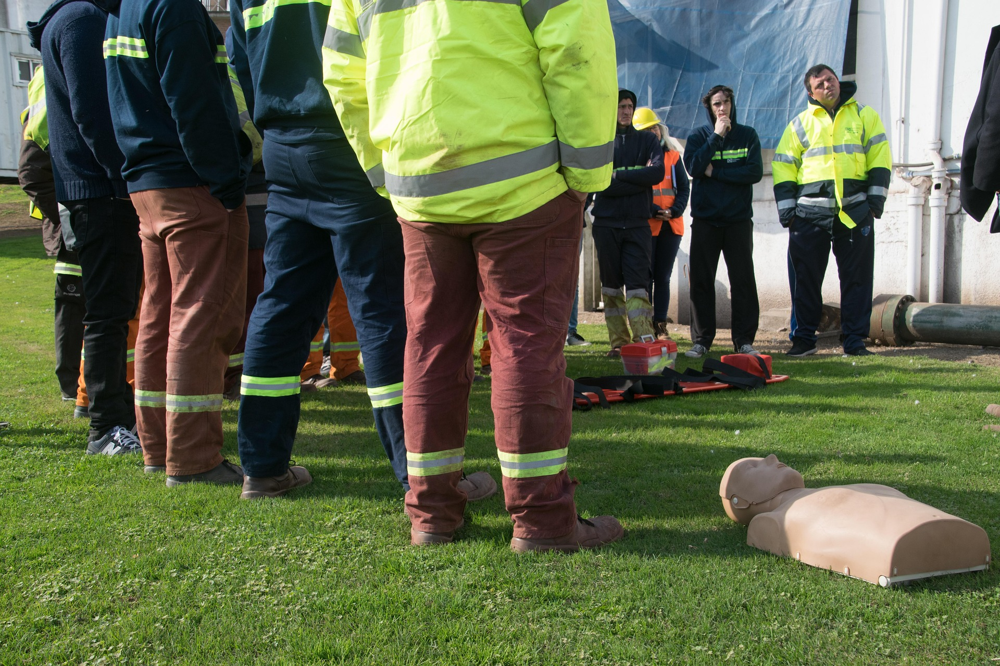
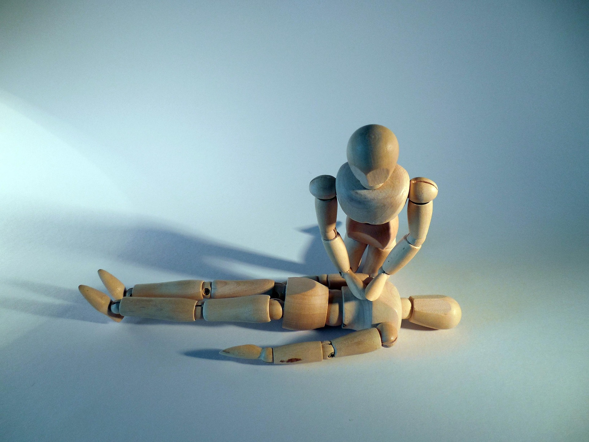
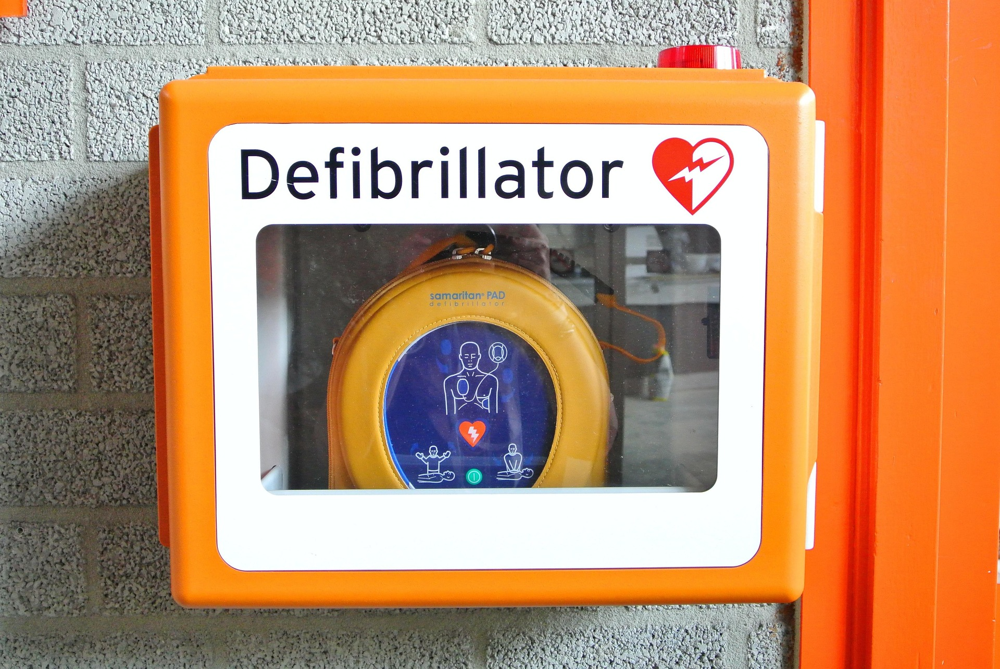

About Shaka Braddah Medical
At Shaka Braddah Medical, our mission is simple: to help people feel prepared, confident, and equipped when it matters most. Founded on real-world experience in fire and emergency medical services, we understand that emergencies don't always happen when or where you expect them. That's why we're passionate about bringing lifesaving education and dependable medical equipment to the people who need them.
Through hands-on CPR training, practical emergency preparedness education, and access to professional-grade first aid and medical supplies, we strive to give individuals, families, businesses, and organizations the tools they need to respond with confidence.
We believe that being prepared can make a difference, that knowledge is one of the most valuable tools you can have, and that everyone deserves the opportunity to learn skills that can save lives.
Shaka Braddah Medical — Prepare a braddah. Save a braddah.

CPR Training
You Don't Have to Be a First Responder to Save a Life.
Emergencies can happen anywhere, and knowing what to do can make all the difference. At Shaka Braddah Medical, we're passionate about empowering everyday people with the knowledge, skills, and confidence to respond when it matters most. With real-world experience as a firefighter and paramedic, our CPR training focuses on practical, hands-on learning that prepares you to take action when someone needs help. Whether you're a parent, teacher, coach, business owner, or simply someone who wants to be prepared, we're here to help you gain the skills that could one day save a life. Because lifesaving knowledge shouldn't be limited to first responders.

Schedule TodayProfessional First Aid Equipment
Your Business Deserves to Be Prepared.
When an emergency happens, having the right equipment readily available can make all the difference. At Shaka Braddah Medical, we believe every workplace deserves access to dependable, professional-grade first aid and emergency medical supplies. Drawing on real-world experience in fire and emergency medical services, we understand the importance of being properly equipped and prepared to respond when unexpected situations arise. Whether you're outfitting a small business, managing a large workplace, or looking to upgrade your existing first aid supplies, we're here to help you find quality equipment to meet your needs. Our goal is to help businesses create safer, better-prepared environments by providing the tools and resources needed when every second counts.

Get More Information